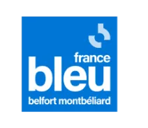
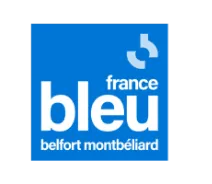

A propos
Ca va trail'er
Le festival Ça va trail'er est né de l'envie de réunir deux univers passionnants : le sport et le cinéma. Pendant une semaine à Belfort, il offrira une scène unique pour de nouveaux artistes et athlètes à travers des courts métrages captivants, célébrant à la fois la créativité et l'ffort physique. Organisé au printemps, en plein air, ce festival vise à dynamiser la ville tout en profitant d'un cadre naturel. L'originalité réside dans l'interaction directe avec le public, qui élira le meilleur film, et les rencontres privilégiées avec les réalisateurs et sportifs. Une expérience immersive, ouverte aux familles et aux amateurs de sport et de culture.
Qui peut partcicper ?
Les nouveux artistes. Ainsi, le festival acceuille aussi bien les amateurs que ceux débutant dans le cadre professionel. Il faut néanmoins avoir au minimum deux courts métrages réalisés à nous envoyer.
Notre équipe
Notre équipe est composée de passionnés de cinéma et de trail, unissant leurs expertises pour donner vie à ce festival unique. Paul Moreau, directeur artistique, sélectionne les courts métrages avec soin pour refléter l'essence du trail et de la nature. Claire Dupuis, responsable technique, garantit une projection de haute qualité et gère la logistique audiovisuelle. Lucas Garnier, chargé de communication, fait rayonner l'événement sur les réseaux sociaux et auprès des communautés sportives. Enfin, Sophie Blanchard, coordinatrice logistique, veille au bon déroulement de l'événement et à l'accueil des participants. Ensemble, nous partageons une vision commune : célébrer le trail à travers l'art cinématographique.
Nos valeurs
Accessibilité
Authenticité
Passion
Nature
Nos partenaires

 
